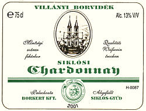

|
|
| Weinbaugebiet 1 -
Villány-Siklós |
| |

 |
| |
Weinbaufläche:
1.601 Hektar - Diese Gegend ist mit
jährlich 2002 Sonnenstunden das sonnenreichste und daher das
wahrscheinlich beste Weinbaugebiet mit den besten
Weinen in Ungarn, die noch tatsächlich an heimischen
Rebstöcken heranreifen.
|
Lage -
Die Region befindet sich südlich der
an den südlichen Hängen des Mecsek-Gebirges. Die
größeren Weinbausiedlungen dieser Region sind:
Villány, Villánykövesd,
Siklós, Kisharsány, Nagyharsány.
|
Klima
- Das
mediterrane Klima der südlichsten Weingegend von
Ungarn bietet ausgezeichnete Voraussetzungen für den Weinbau. Die
durchschnittliche Jahrestemperatur beträgt 11,4
°C, die durchschnittl. Niedeschlagsmenge liegt bei 662 mm pro
Jahr. Der Winter ist mild, das Frühjahr fängt hier
relativ früh an und der Sommer ist z.T. heiß!
Bereits Anfang September sind die Weintrauben teilweise
zuckersüß.
|
Dr. Siegmund Teleki aus der berühmtesten Weinbauerfamilie
dieses Weinbaugebietes schrieb 1937 ein Buch über "Weinbau und
Weinwirtschaft in Ungarn", darin steht u.a. folgendes über
dieses Weinbaugebiet:
"Einen sehr guten
Einfluss auf das Klima dieser am südlichsten gelegenen
Weinbaulandschaft übt das Mecsekgebirge aus, das sich
inselartig aus der Ebene erhebt und Schutz gegen Norden
gewährt. Selbst der Name des Komitates Baranya, dessen Grenze
parallel zu der des Villány-Pécser Weinbaugebietes verläuft,
lässt sich vom Wein ableiten. Das Wort Baranya ist nämlich aus
"bor" und "anya" entstanden. "Bor" bedeutet auf Ungarisch Wein
und "anya" Mutter. Somit heißt dieses Komitat
"Weinmutter", was auf eine sehr intensive Weinbautätigkeit
schließen lässt. ... Die besten Rotweinlagen
befinden sich in der unmittelbaren Umgebung der Gemeinde
Villány. Auch in einigen Nachbarortschaften werden sehr gute
Rotweine gefechst. Die vorherrschende Bodenart ist Löss..."
|
Bereits die Römer bauten hier Wein an. Im Mittelalter
siedelten sich hier Serben an und bauten ihren Kadarka an. Am
Ende der Türkenherrschaft wurde die Gegend entvölkert, die
angesiedelten Deutschen haben ihren Portugieser eingeführt
und dafür unzählige Kellerreihen in ihren Weinbauorten
errichtet.
Die Weine aus Villány wurden schon im 19. Jahrhundert nicht
nur in andere Teile Europas, sondern auch nach Amerika und
Brasilien exportiert.
|
  |
Kellerreihen in Villánykövesd
|
Die feurigen Villányer Rotweine sind durch die Farben
rubinrot und granatrot gekennzeichnet. Die
Weine von Villány sind im
allgemeinen
körperlich schwer, haben ein hohes Alkohol- und Tanningehalt.
Über ihr typisches, intensives
"Villányer Bukett" sind sie leicht erkennbar. Der
intensive Duft, der kräftige Körper und die Milde
dieser Weine nehmen es schon fast mit den Eigenschaften der
mediterranen Weine auf. In den Weißweinen von
Siklós dominiert der Sortencharakter, sie sind aromatisch
und harmonisch.
|
Weinsorten
in diesem Anbaugebiet:
|
 |
Rotweinsorten - Die gefragtesten Weinsorten
in diesem Weinbaugebiet sind Rotweine: Blauer Portugieser,
Merlot, Blaufränkischer und Cabernet. Ein Besuch im Weinmuseum
von Villány (Bild links) ist ein Muss. Was uns bereits aus den
spanischen Weinkellern bekannt ist, darüber erfährt man hier
einiges mehr. Es war Zsigmond Teleki (1854 - 1910), der in
diesem Anbaugebiet 1881 erfolgreich den Kampf gegen die
Reblaus begann. Ihm ist es zu verdanken, dass die Rebe als
Pflanze auf dem europäischen Kontinent überleben konnte -
versicherte man uns in Malaga, wo seitdem die spanischen Reben
in ungarische Stammwurzel gepfropft werden, die auf Zsigmond
Teleki zurückzuführen sind.
|
Weitere Rotweinsorten sind der Cabernet Sauvignon, der Merlot, der Pinot Noir, der
Zweigelt und der Kadarka. In
alten Schriften wird manchmal erwähnt, dass der
Villányer Rotwein unter den ungarischen Rotweinen hervorragt
wie eine uralte Eiche aus dem Gesträuch. Die Sorte Portugieser aus
Villány ist
ein Kapitel für sich. Der frühere Markenname Oporto wurde mit dem
EU-Beitritt Ungarns verboten und heißt nun Portugieser.
|
|  |
Weißweinsorten
werden auf großen Flächen in den mittleren und
westlichen Gebieten dieser Weinregion gezüchtet. Die
häufigsten Sorten sind der Welschriesling, das Lindenblatt,
der Chardonnay, der Traminer, der Rheinische Riesling und die
"Königstochter". |
Weinbauer,
-wirtschaften und -händler in diesem Weinbaugebiet:
- H-7773
Villány, Baross utca 48
- H-7773
Villány, Baross Gábor utca 103 und H-7772
Villánykövesd, Pincesor 4-5, 24
- H-7773
Villány, Batthány utca 15
-
H-7773
Villány, Ady fasor 2
-
H-7773
Villány, Bem utca 9 / neben dem Weinmuseum
-
H-7773
Villány, Erkel Ferenc utca 2
-
H-7773
Villány, Diófás utca 1
-
H-7773
Villány, Oportó utca 6-13
-
H-7773
Villány, Déryné utca 10
Szabó
Pincészet - H-7800
Siklós, Zuhány dűlő
-
H-7773 Villány, Erkel Ferenc utca 10
-
H-7773 Kisjakabfalva, Fő út 43
-
H-7800 Kisharsány, Fekete-hegy
-
H-7773 Villány, Baross Gábor utca 106-108
|
Weitere
Weinbauer und -händler in diesem Anbaugebiet:
Péter
Bajor
Weinkeller
von Zoltán Hünczer
Hungarovin
AG ( György Villa Weine )
Weinkeller
von Márton Mayer
Weinkeller
von János Müller
Balázs
Neuperger
Imre
Tiffán
Kecskés
Pince
Villányer
Weinwirtschaft AG
Vylyan
Weingarten und Kellerei AG
Vinoland
Plus GmbH ( Kellerei von Béla Jekl )
Weinkeller
von Alajos Wunderlich
Zwack
Handels GmbH
Weinweg
Villány-Siklós
kostenlose Anmeldung >>>
|
|
|
Bester
Anbaugebiet = bester Wein?
Die
Rebe ist eine tropisch Pflanze, die zur Reife ihrer Früchte
besonders viel Sonnenschein benötigt. Je mehr Sonnenschein,
umso
höher ist der Zuckergehalt in den Weintrauben und desto
bessere
Weine werden daraus gemacht, solange die
Weinqualität nach EU-Karrierepolitikerwissen am
Zucker- und Alkoholgehalt im Wein gemessen wird.
|
Schauen
wir doch mal
an, was in dieser sonnigen, aus klimatischer Sicht besten Weinregion
Ungarns mit
dem Wein passiert. Nehmen wir die größte
Weinkellerei
der Region als repräsentativ dafür an, was
für
welchen Wein man hier bekommt.
Eine der
größten
Weinkellereien in dieser Region ist "Gere Tamás
Pincészete". Auf der Homepage dieser Kellerei steht
folgendes auf
Englisch:
"The southernmost Hungarian
wine region, Villány has unique endowments of location, soil
and microclimate enabling expert wine-makers to create wines with very
special flavours. Within the region, the winery's most valuable
vineyards are located in the Kopár, Remete,
Csillagvölgy and Várerdő areas."
Man
möge daraus annehmen, hier werden Weine aus den
genannten
Gegenden dieser Weinregion vermarktet. Weit gefehlt! - Wenn man
genauer liest, was da geschrieben wird, dann fällt auf, dass
hier
folgende Fakten genannt werden: "Südlichste ungarische
Weinbauregion", "besondere klimatische Verhältnisse", "hier
werden
besondere Geschmacksrichtungen in die Flaschen gefüllt". Es
werden
ferner die Namen
einiger Weinfelder genannt, wo man hier Wein anbaut. - Das mag alles
richtig sein, bedeutet
aber noch
lange nicht, dass hier einheimische Weine produziert, eingekellert oder
verkauft würden!
Auf
allen Etiketten
der Flaschen dieses Kellereibetriebes steht u.a.
"Villányi Cuvee". Es sind tatsächlich Weinflaschen,
die in
der Abfüllanlage der Weinkellerei von Tamás Gere
gekältert und etikettiert werden. Inwiefern diese Weinflaschen
Weine aus dieser Region enthalten, das steht auf keinem
Etikett und sollte zum Nachdenken anregen. Unter den Weinbauern
Ungarns ist der Name von Tamás Gere weit und breit gut bekannt,
allerdings als
Großhändler. Sein Einkaufsgebiet erfaßt
nicht nur die
Umgebung von Plattensee, sondern auch die
Nachbarländer. Wo die Tankwagen der "Gere
Tamás Picészet" aufkreuzen, dort werden
die Weinbauer mit 50 Forint (ca. 20 Eurocent) pro Liter
Neuwein
abgespeist (Stand: 2009). Einige Zeit später bekommt man in
den ungarischen
Supermärkten die 0,7
Liter Weinflaschen aus dieser Weinkellerei für 2.000
Forint (ca. 8 Euro) - und die
Aufschrift auf den Flaschen ist: "Villányi
Cuvée"
- Das ist kein Etikettenschwindel! Diese Weinflaschen werden
tatsächlich in der Weinkellerei von Tamás Gere
in Villány abgefüllt, kurz oder lang sogar hier gelagert. Na
dann
Prost Villányi Cuvee und Gere-Wein!
|
Touristik:
sehenswerte touristische Ziele
nach einer Weinprobe in den Kellerdörfern von
Villány,
Boly und
Siklós ....siehe auch:
,
|
|
| |
| |
|
Ungarn-Tourist Team

|
| |
| |
|